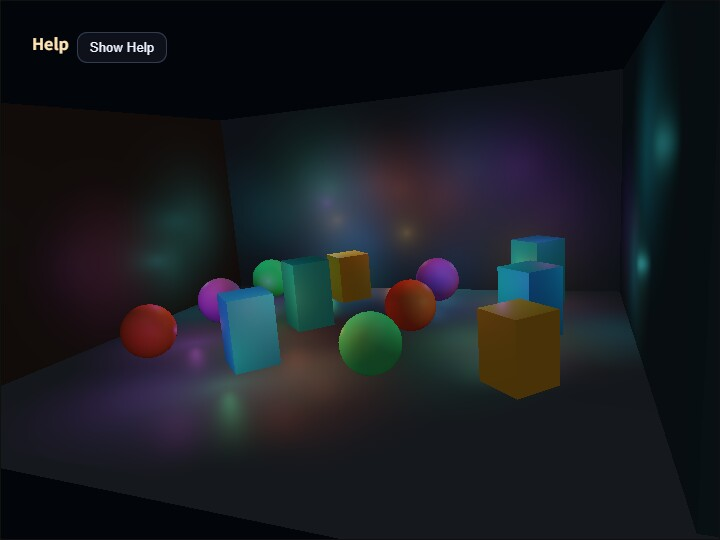

compute_deferred_lighting
English | 日本語

Overview
Deferred Lighting renders geometry into a G-buffer first, then evaluates lights against the stored surface data. In this sample, ComputeEffectPipeline connects the Geometry Buffer, Deferred Lighting, and tone-mapping stages while evaluating up to 128 Local Lights per pixel. Scene geometry is rendered only once regardless of the light count, making it possible to observe geometry complexity and light-evaluation complexity separately.
A Local Light is either an omnidirectional type: "point" light or a directional type: "cone" light. This sample declares every animated light as a point so that the cost of a large light count is easy to compare. The type property is required. A cone also requires direction, innerAngle, and outerAngle; an incomplete cone is never replaced with a point light.
Light position and direction use World coordinates. DeferredLightingPass uses the frame's CameraFrame to transform positions into camera-relative view space and directions into view space without translation. The application therefore does not build a projection array or view matrix separately.
Connecting Lights to a Frame
A point Local Light is created as follows.
const lights = [{
type: "point",
position: [0.0, 2.0, -4.0],
color: [1.0, 0.45, 0.12],
radius: 9.0,
intensity: 3.2
}];The same cameraFrame is passed to G-buffer generation and lighting. The sample disables Shadow, SSAO, SSR, DoF, Bloom, Toon, and Edge so the relationship between the G-buffer and many Local Lights remains isolated.
app.start({
onBeforeDraw: ({ cameraFrame }) => {
pipeline.renderScene(app.space, cameraFrame, app.clearColor, {
shadowEnabled: false
});
},
onAfterDraw3d: ({ cameraFrame }) => {
app.getGPU().endPass();
const finalColor = pipeline.encode(app.getGPU().commandEncoder, {
cameraFrame,
shadowEnabled: false,
ssaoEnabled: false,
ssrEnabled: false,
lights,
lightCount: 64,
lightingView: "lighting"
});
app.screen.beginPresentPass({ clearColor: app.clearColor });
copyPass.draw(finalColor);
app.screen.clearDepthBuffer();
}
});lightCount selects a prefix of the array. A value beyond the array length or the constructor's maxLights is rejected. This baseline implementation scans every active light for every pixel, so compute cost increases with the light count. Applications requiring substantially more lights should consider tiled or clustered lighting.
Running and Inspecting the Sample
Open compute_deferred_lighting.html in a WebGPU-capable browser. Use V or the CommandPalette to switch among lighting / albedo / normal / depth, separating the final lighting result from its G-buffer inputs.
Use 1 and 2, or the Lights control in the CommandPalette, to select 16, 32, 64, 96, 128 active lights. Press Space to pause light animation and compare debug views or light counts with an unchanged arrangement. Increasing the light count should leave the geometry unchanged while increasing only lighting overlap and compute cost.